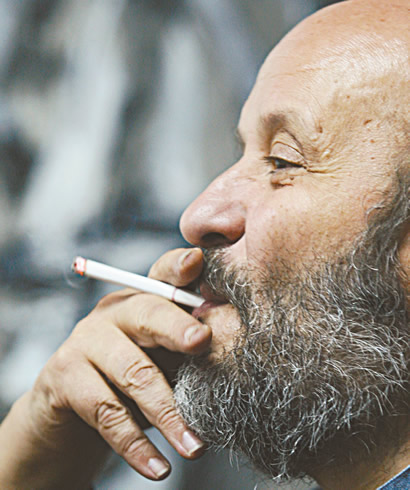

Un hogar a 18 mil kilómetros de casa
El director de teatro italiano, Luigi Maria Musati, dejó clara su pasión por el teatro, el amor por el grupo Matacandelas, la determinación en Poe y una compulsiva inclinación al cigarrillo
Articulo extraido de http://www.centropolis.com.co
Durante dos horas de conversación asistida por su traductor “Gigio”, empató cigarro con cigarro mientras su expresión brincaba de una seriedad absoluta a la más infantil risa. Con la excepción de esa risa tierna, el italiano recuerda al director del Matacandelas, Cristóbal Peláez, en algunos gestos, la veloz forma de hablar con fragmentos tan lentos que parecen silencios y en las opiniones francas y escuetas. Como buen italiano, Musati habla mucho más. Acaba de regresar a Italia después realizar el primer montaje de la trilogía de Edgar Allan Poe que se presentó durante el mes de noviembre en el Teatro Matacandelas, basado en el cuento La caída de la Casa Usher.

Musati fue el director de Medea en el Matacandelas y será el director en la trilogía de Poe.
Llegada a Colombia
Estaba interesado en el teatro colombiano desde que vi la obra Soldados del TEC en Italia. Llegué hace 17 años al Festival de Teatro en Manizales con la escuela que en ese entonces dirigía, la Escuela Nacional de Teatro. Quedé muy sorprendido de ver un teatro muy vital y conectado con la vida, lleno de público muy variado y exigente, que evidentemente estaba acostumbrado a ir a teatro y a tener muchas propuestas. En 2000 la Universidad de Antioquia me invitó a dar un curso de postgrado en dramaturgia alternativa, entonces empecé a frecuentar al Teatro Matacandelas. Estaba todas las noches ahí, no solo para ver el espectáculo sino para hablar con Cristóbal Peláez.
El Matacandelas
De estas charlas con Cristóbal nació mi interés en el Matacandelas porque representa lo que yo habría querido continuar realizando en Italia. Esta manera de ser grupo la realizamos otras personas y yo durante 4 años a finales de los 70. Era un lugar singularmente similar al Matacandelas en el sentido de que el teatro y la vida estaban estrechamente unidos. Cuando vi el Matacandelas, me pareció que eso continuaba existiendo ahí. Me impactaron los textos que escogían; no se ocupan solo de dramaturgia contemporánea o solo de autores dramáticos. Seguí el trabajo que hacían de Silvia Plath y Doña Rosita la soltera de García Lorca y vi un modo extraordinariamente eficaz pero muy culto, de afrontar textos clásicos. Una cultura teatral no académica pero real, donde el trabajo del actor no tenía miedo de medirse con la palabra clásica o poética. Entendí que había una relación muy profunda entre lo que yo entiendo como teatro y lo que entiende el Matacandelas.
Trabajando en grupo
Está a 18 mil kilómetros de mi casa, pero este es mi grupo; yo soy otro más del Matacandelas. Creo fuertemente en la idea de grupo porque comen juntos. El concepto de dividir, compartir, tiene un significado muy grande y muy concreto. Cuando comemos juntos trabajamos porque se habla de todo, problemas culturales o las pendejadas más cotidianas. Hablar de Fernando González o de Poe no es una elección estética, es una elección ética, hablamos de él y lo ponemos en escena porque juntos compartimos algo de él. No es una idea del director, es un amor de todos. El grupo tiene un lenguaje que comparte, una manera de entenderse en la vida y en el trabajo. Yo he visto salir y entrar muchas personas del Matacandelas, pero sigue siendo el Matacandelas.
Edgar Allan Poe
En el baño hay un escrito que dice “Poe vive en un estado constantemente catatónico” y eso me sorprendió porque es el modo en que los jóvenes se relacionan con este autor pero están completamente equivocados. Poe es un escritor lúcido y técnico, absolutamente despierto, controladísimo, que logra casi perfectamente la unión entre el control de la mente técnica del artista y el instinto del escritor. Lo que logra es un efecto sobre el lector a través de la construcción lógica de lo ilógico, de lo irracional, de lo fantástico y terrible de la pesadilla. No todos aquellos que tienen pesadillas logran contarlas. Poe no era un poeta del arte por el arte, era un periodista con un trabajo. Escribía estos cuentos para el periódico con mucha atención a aquello que le podía interesar al lector. No es un escritor negro ni diabólico, tiene una fuerza espiritual muy fuerte y la capacidad de leer un plano de la realidad como la imagen de algo mucho más profundo, más escondido donde está la esperanza y no el horror. La literatura gótica juega a creer en lo sobrenatural pero en Poe existe la capacidad de la mente humana de construir lo sobrenatural.
¿Homenaje?
Homenaje es una palabra que no me gusta porque se le hace a los muertos y Poe está vivo. Quiero rendirle justicia, darle la posibilidad de hablar aún. Lo que tengo que decir de Poe lo digo en la puesta en escena. Son 10 años que he pensado en el montaje de La Caída de la Casa Usher. En mi cabeza he descartado muchas hipótesis de montajes y en mi cabeza ya lo he puesto en escena 6 ó 7 veces. Esta que hago aquí me convence mucho. Son 3 obras porque el número 3 es el 3, no es el 2 ó el 4... Tesis, antítesis y síntesis, según la filosofía idealista hegeliana que nos ha formado. Aquí todos somos hegelianos de izquierda.
La mujer como antítesis
El femenino es el otro, para Poe particularmente, lo es en La Caída de la Casa Usher. En los cuentos que tienen mujeres como protagonistas, realmente el protagonista es un hombre pero la mujer es la figura dominante. La idea es el interrogarse sobre la naturaleza del masculino con relación al femenino y a la inversa. Como dice un gran poeta italiano “Hijos gemelos del azar, amor y muerte están unidos de manera indisoluble”. El femenino es la puerta; atravesar la puerta se convierte en explorar el femenino, obviamente desde mi perspectiva masculina. El femenino es destructivo, Medea, pero es la puerta del cielo, Beatriz. En esta doble naturaleza está el motivo por el cual los hombres se enamoran desesperadamente de las mujeres.